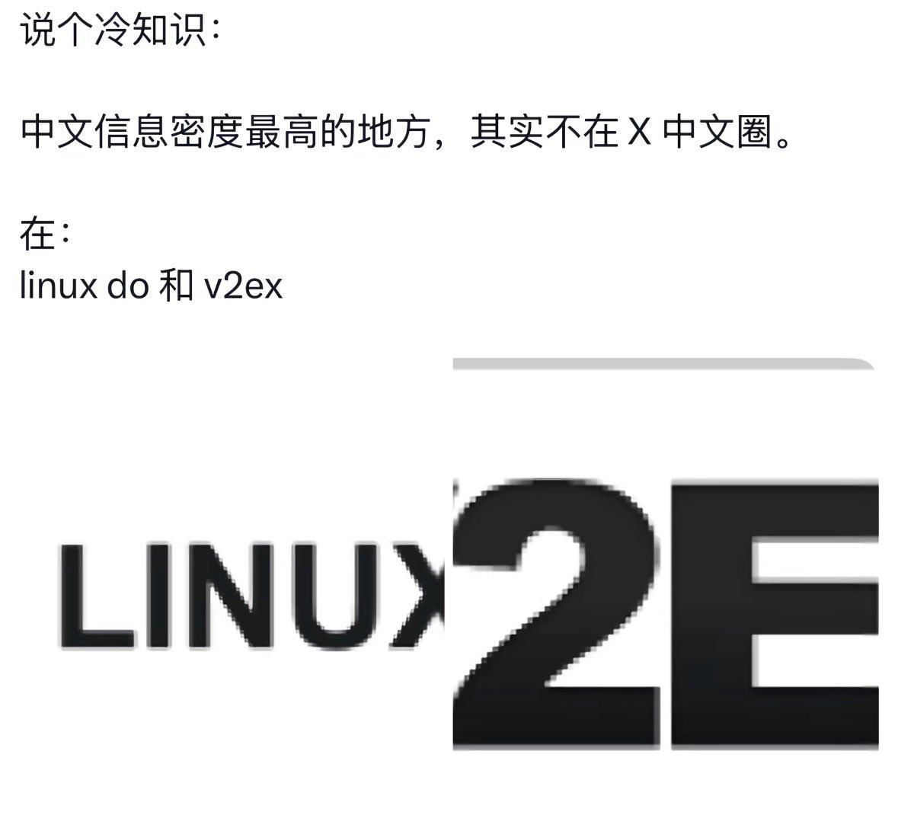

👾𝓽𝓱𝓮𝓯𝓸𝓻𝓮𝓿𝓮𝓻𝓲𝓻𝓲𝓼🍥
@theforeveriris
@Phoenixyin13 网上说说得了，现实中谁不想在已有邀请码的基础上再写几百字小作文申请入站，然后急头白脸花 600 刀买一个富可敌国限时广告位，看着满屏盲水印和网页偷偷上传浏览器指纹，收获一堆吹水贴和不知名中转站。

Phoenix Yin
@Phoenixyin13
linuxdo皇帝网站闹麻了，而且越来越水，纯二手token贩卖地，二维灰产羊毛中转站社区，有什么好吹的？
至于v2ex，全是讨论哪个AI更好用。喷X可以啊，那v2ex的技术讨论在哪儿呢？
对了，我入坑是hostloc，虽然现在已经凉了。 https://t.co/LsNZohgR1c